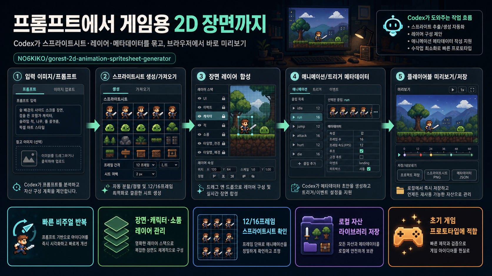

프롬프트에서 게임용 2D 장면까지
NO6KIKO/gorest-2d-animation-spritesheet-generator는 Codex와 로컬 브라우저 앱을 연결해 스프라이트시트 생성·장면 합성·애니메이션 미리보기를 빠르게 반복하는 초기 2D 게임 프로토타입 작업대입니다.

한 줄 판단
“완성형 게임 엔진”보다는 Codex가 조작할 수 있는 로컬 2D 장면 제작 실험실에 가깝습니다.
누구에게 유용한가
사이드 스크롤러, 공포/스토리형 2D 장면, 캐릭터·소품 스프라이트시트의 빠른 시각 검수를 원하는 프로토타이퍼에게 적합합니다.
먼저 확인할 점
릴리스가 없고 생성 자산이 많이 포함된 초기형 저장소입니다. 내 샘플 이미지로 스프라이트 안정성·메타데이터 저장 흐름을 먼저 검증하는 것이 좋습니다.
작업 흐름
README와 코드 구조 기준으로 정리한 사용자 관점 플로우입니다.
Codex가 작업 지시를 받음
생성 또는 가져오기
배경·캐릭터·소품 배치
액션, 방향, 루프, 태그
확인 후 로컬 저장
이 저장소가 도와주는 일
빠른 비주얼 반복
장면을 열고 레이어를 조정한 뒤 애니메이션 결과를 브라우저에서 즉시 확인하는 흐름을 목표로 합니다.
스프라이트시트 검수
현재 장면에 연결된 캐릭터·소품·효과 스프라이트시트를 모아 보고, PNG 다운로드와 메타데이터 편집을 지원합니다.
장면 단위 자산화
public/generated/game_asset_library.json에 장면과 자산을 저장해 재사용 가능한 로컬 라이브러리로 관리합니다.
레이어 기반 합성
배경, 플레이어, 소품, UI, 전경, 이펙트를 분리된 레이어로 두고 위치·크기·순서·표시 상태를 조정합니다.
상호작용 모델
Inspect, Pickup, Toggle, Door/Scene Link, Animated Prop, Conditional 같은 프리셋으로 장면 상태를 설계합니다.
Codex 조작 표면
Codex가 파일과 로컬 API/자산 라이브러리를 수정하고, 브라우저가 결과 확인 표면이 되는 구조를 지향합니다.
기술·성숙도 신호
스택
React 19, Vite 8, Express, TypeScript, lucide-react, motion 기반. 서버는 Vite middleware와 로컬 API를 함께 제공합니다.
코드 규모
pygount 기준 총 131개 파일, 코드 약 13,390라인. TSX 4,592라인과 JSON 5,025라인 비중이 큽니다.
검증 결과
npm install 후 npm run build 실행 성공. Vite 클라이언트와 Express 서버 번들 생성까지 확인했습니다.
자산 상태
로컬 라이브러리 기준 자산 16개, 장면 4개, 생성 PNG 86개가 포함되어 샘플 중심으로 바로 탐색할 수 있습니다.
라이선스/배포
MIT 라이선스입니다. 단, GitHub Releases는 아직 없으므로 버전 안정성은 커밋 기준으로 판단해야 합니다.
외부 API
기본 로컬 워크플로는 키 없이 가능하다고 설명합니다. 클라우드 이미지 생성을 켜면 Gemini API 키가 필요합니다.
도입 결론
바로 시도해볼 만한 경우
“이미지 생성 → 스프라이트시트 → 장면 배치 → 플레이 확인”을 한 번에 묶어 초기 게임 장면을 빠르게 실험하려는 경우 적합합니다.
주의할 경우
상용 파이프라인 대체, 대규모 협업, 엔진별 런타임 export까지 기대한다면 아직 검증할 부분이 많습니다.
추천 첫 검증: 직접 만든 캐릭터/소품 샘플 1개로 16프레임 시트를 넣고, 레이어 배치·메타데이터·미리보기·저장까지 한 사이클을 확인하세요.
분석 근거
GitHub metadata, README, package manifest, 주요 소스 파일, asset library, pygount 지표, 실제 production build 실행 결과를 기준으로 작성했습니다.